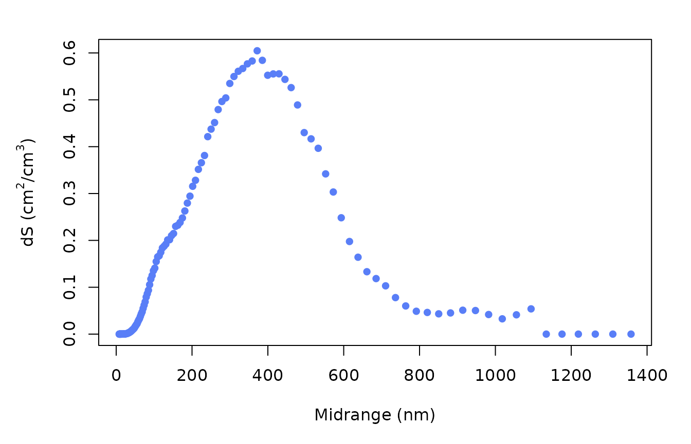

Particle Size Distribution
Source:vignettes/Particle_Size_Distribution.Rmd
Particle_Size_Distribution.RmdHaze is a common form of air pollution that we see. Particulate matter is the main cause of aggravating haze weather pollution. Studying the physicochemical characteristics of particulate matter has been a popular direction in the field of atmospheric science. Among them, the particle size distribution characteristics can provide important information on the source, formation and growth mechanism of particulate matter particles.
Unlike gas pollution, particle size spectral data involve three dimensions: time, particle size, and number concentration. This makes the processing and visualization of particle size spectral data a bit more problematic than conventional gas data.
The functions provided by the FOQAT package in R language bridge the process from reading to visualization, making the process much lighter and more natural.
The flow and functions are shown in the figure below:

To begin, we’ll load foqat and pre-process the SMPS data in foqat.
library(foqat)
#Read built-in files
dn_table = read.delim(system.file("extdata", "smps.txt", package = "foqat"), check.names = FALSE)
dn1_table=dn_table[,c(1,5:148)]
#Set time format
dn1_table[,1]=as.POSIXct(dn1_table[,1], format="%m/%d/%Y %H:%M:%S", tz="GMT")
head(dn1_table[,1:5])
#> Time Start 7.91 nm 8.20 nm 8.51 nm 8.82 nm
#> 1 2021-06-07 00:01:46 0 0 0 0
#> 2 2021-06-07 00:05:26 0 0 0 0
#> 3 2021-06-07 00:09:06 0 0 0 0
#> 4 2021-06-07 00:12:46 0 0 0 0
#> 5 2021-06-07 00:16:26 0 0 0 0
#> 6 2021-06-07 00:20:06 0 0 0 0Plot the time series of particle size distribution
geom_psd() allows you to plot wide form data.
The input is the dataframe of particle size data. The first column of input is datetime; the other columns are number concentration (N, unit: #/cm3) or log number concentration (dN/dlogdp, unit: # cm-3) for each particle size channel. Column names of the other columns are the middle particle size for each particle size channel.
geom_psd(dn1_table,fsz=10)
Calculate relevant parameters and convert data type betwenn dn and dn/dlogdp
nsvp() can help you Calculate surface Area, Volume, Mass of particle by particle number concentrations.
The results are divided into two tables, one for the sub-grain size segments dN, dN_dlogdp, dS, dV, dM, dS_dlogdp, dV_dlogdp, dM_dlogdp; and one for the total grain size segments N, S, V, M.
dn2_table=nsvp(dn1_table,dlogdp=FALSE)
#> Using dN as value column: use value.var to override.
#> Using dN_dlogdp as value column: use value.var to override.
#> Using dS as value column: use value.var to override.
#> Using dV as value column: use value.var to override.
head(dn2_table[["df_channels"]])
#> Time Start variable dN dN_dlogdp dS dV dM dS_dlogdp dV_dlogdp
#> 1 2021-06-07 00:01:46 7.91 0 0 0 0 0 0 0
#> 2 2021-06-07 00:05:26 7.91 0 0 0 0 0 0 0
#> 3 2021-06-07 00:09:06 7.91 0 0 0 0 0 0 0
#> 4 2021-06-07 00:12:46 7.91 0 0 0 0 0 0 0
#> 5 2021-06-07 00:16:26 7.91 0 0 0 0 0 0 0
#> 6 2021-06-07 00:20:06 7.91 0 0 0 0 0 0 0
#> dM_dlogdp
#> 1 0
#> 2 0
#> 3 0
#> 4 0
#> 5 0
#> 6 0
head(dn2_table[["df_total"]])
#> Datetime N S V M
#> 1 2021-06-07 00:01:46 90.48014 5790.050 12.34191 0.7013118
#> 2 2021-06-07 00:05:26 88.97025 5693.429 10.41402 0.5445877
#> 3 2021-06-07 00:09:06 103.51971 6624.485 10.77570 0.5248920
#> 4 2021-06-07 00:12:46 103.32800 6612.217 12.21901 0.6465528
#> 5 2021-06-07 00:16:26 91.69420 5867.741 11.76037 0.6150348
#> 6 2021-06-07 00:20:06 83.54161 5346.036 11.58534 0.6514943nsvp can also help you convert data type betwenn dn and dn/dlogdp.
Convert between wide form and long form
transp()converts two forms of tables back and forth, inputting one, then outputting the other.
dndlogdp_table=transp(dndlogdp_list)
#> Using dN_dlogdp as value column: use value.var to override.
head(dndlogdp_table[,1:5])
#> Time Start 7.91 8.2 8.51 8.82
#> 1 2021-06-07 00:01:46 0 0 0 0
#> 2 2021-06-07 00:05:26 0 0 0 0
#> 3 2021-06-07 00:09:06 0 0 0 0
#> 4 2021-06-07 00:12:46 0 0 0 0
#> 5 2021-06-07 00:16:26 0 0 0 0
#> 6 2021-06-07 00:20:06 0 0 0 0Resample wide form particle size distribution
trs() can Resample and cut time series of wide form particle size distribution.
dndlogdp_table=transp(dndlogdp_list)
#> Using dN_dlogdp as value column: use value.var to override.
head(dndlogdp_table[,1:5])
#> Time Start 7.91 8.2 8.51 8.82
#> 1 2021-06-07 00:01:46 0 0 0 0
#> 2 2021-06-07 00:05:26 0 0 0 0
#> 3 2021-06-07 00:09:06 0 0 0 0
#> 4 2021-06-07 00:12:46 0 0 0 0
#> 5 2021-06-07 00:16:26 0 0 0 0
#> 6 2021-06-07 00:20:06 0 0 0 0Calculate the average variation
avri() can calculate the average variation of particle size time series.
Calculate the average distribution of particle size spectral parameters
avri() can calculate the average variation of particle size time series.
#Extract the time series of the required parameters from the results of the nsvp calculation, here the surface area is used as an example
dsdlogdp_list=dn2_table[["df_channels"]][,c(2,5)]
#Calculate the average distribution of surface area particle size spectra
ds_avri=avri(dsdlogdp_list,mode="custom",value=1)
head(ds_avri)
#> custom cycle dS_ave dS_sd
#> 1 7.91 0 0
#> 2 8.20 0 0
#> 3 8.51 0 0
#> 4 8.82 0 0
#> 5 9.14 0 0
#> 6 9.47 0 0We can plot it.
par(mar=c(5,5,2,2))
plot(x=ds_avri[,1],y=ds_avri[,2], pch=16, xlab="Midrange (nm)", ylab=expression("dS (cm"^2*"/cm"^3*")"), col="#597ef7")